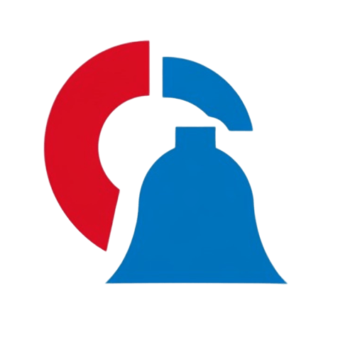

<nav class="navbar navbar-expand-lg navbar-dark bg-dark fixed-top py-1">

  <div class="container-fluid pt-2">
  <!-- Botón para abrir el sidebar -->
  <button class="navbar-toggler" type="button" data-bs-toggle="offcanvas" data-bs-target="#sidebar" aria-controls="sidebar">
  <span class="navbar-toggler-icon"></span>
  </button>
  
  <!-- Logo y texto -->
  <a class="navbar-brand d-flex align-items-center gap-2 mx-auto" routerLink="/dashboard">
  
  <h4 class="mb-0">ALERT MANAGER</h4>
  </a>
  
  <!-- Menú de usuario -->
  <div class="dropdown">
  <button class="btn btn-dark dropdown-toggle" type="button" id="userMenu" data-bs-toggle="dropdown" aria-expanded="false">
  <i class="bi bi-person-circle"></i>
  </button>
  <ul class="dropdown-menu dropdown-menu-end" aria-labelledby="userMenu">
  <li><a class="dropdown-item" *ngIf="!isLoggedIn()" (click)="login()"><i class="bi bi-box-arrow-in-right"></i> Iniciar sesión</a></li>
  <li><a class="dropdown-item" *ngIf="isLoggedIn()" (click)="logout()"><i class="bi bi-box-arrow-right"></i> Cerrar sesión</a></li>
  </ul>
  </div>
  </div>
  </nav>
  
  
  <div class="offcanvas offcanvas-start bg-dark text-light" tabindex="-1" id="sidebar">
  <div class="offcanvas-header">
  <h5 class="offcanvas-title">Menú</h5>
  <button type="button" class="btn-close btn-close-white" data-bs-dismiss="offcanvas"></button>
  </div>
  <div class="offcanvas-body">
  <ul class="nav flex-column">
  <li class="nav-item"><a class="nav-link text-light" routerLink="/dashboard" (click)="closeSidenav()"><i class="bi bi-speedometer2 me-2"></i>Dashboard</a></li>
  <li class="nav-item"><a class="nav-link text-light" routerLink="/news" (click)="closeSidenav()"><i class="bi bi-newspaper me-2"></i>Noticias</a></li>
  <li class="nav-item"><a class="nav-link text-light" routerLink="/articles" (click)="closeSidenav()"><i class="bi bi-file-text me-2"></i>Artículos</a></li>
  <li class="nav-item"><a class="nav-link text-light" routerLink="/images" (click)="closeSidenav()"><i class="bi bi-image me-2"></i>Imágenes</a></li>
  <li class="nav-item"><a class="nav-link text-light" routerLink="/videos" (click)="closeSidenav()"><i class="bi bi-camera-video me-2"></i>Vídeos</a></li>
  </ul>
  </div>
  </div>
  
  <div class="container-fluid mt-5 pt-3">
  <router-outlet></router-outlet>
  </div>